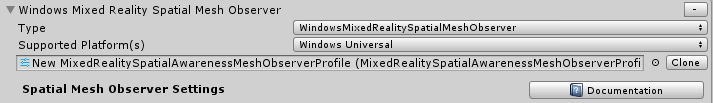
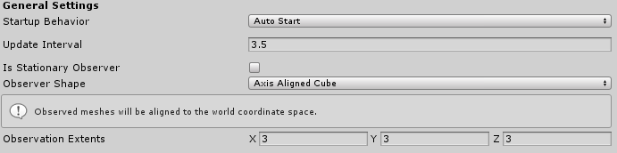
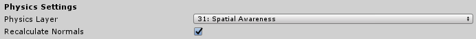
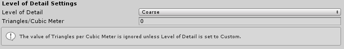
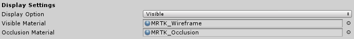
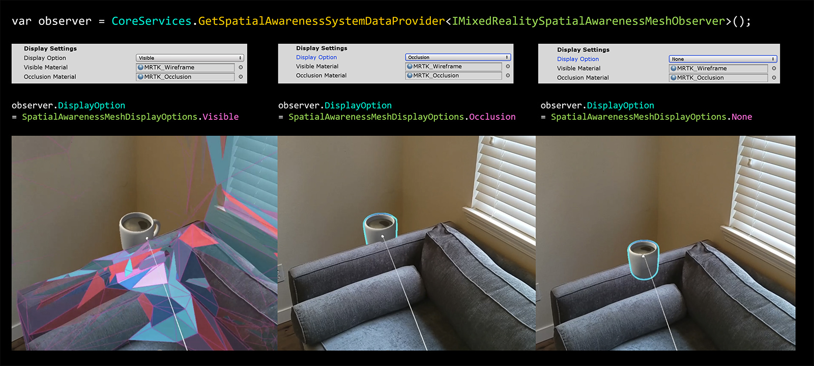

为设备配置 mesh observers
本指南将介绍如何在MRTK中配置开箱即用的空间网格Observer，该Observer支持Windows混合现实平台(例如 HoloLens)。混合现实工具包供的默认实现是WindowsMixedRealitySpatialMeshObserver类。不过，本文中的许多属性也适用于其他自定义Observer实现。
配置文件设置
在为空间感知系统配置空间网格Observer配置文件时，必须首先定义以下两项。
- 具体的Observer类型实现
- 运行此Observer的受支持平台的列表
Note
所有的Observer必须扩展IMixedRealitySpatialAwarenessObserver 接口.

通用设置

Startup Behavior
启动行为(startup behavior)指定Observer是否会在第一次实例化时开始运行。两种选择是:
- Auto Start - 初始化后Observer开始执行的默认值
- Manual Start - Observer将等待被指示启动
如果使用 Manual Start, 则必须通过代码在运行时恢复和挂起它们.
Update Interval
请求平台更新空间网格数据之间的时间(以秒为单位)。典型值在0.1和5.0秒之间。
Is Stationary Observer
指示Observer是保持静止还是随用户移动和更新。如果为true，则Observation Extents**定义的Observer Shape*在启动时将保持在原点。如果为false，Observer空间将跟随用户的头部作为形状的原点。
根据以下属性定义的Observer空间外的任何物理区域，都不会有网格数据计算:Is Stationary Observer, Observer Shape，和 Observation Extents。
Observer Shape
observer shape 定义了mesh Observer在观察网格时会使用的体积类型。支持的选项有:
- Axis Aligned Cube - 与世界坐标系的轴保持对齐的矩形，在应用程序启动时确定
- User Aligned Cube - 旋转以与用户本地坐标系统对齐的矩形形状。
- Sphere - A spherical volume with a center at the world space origin. The X value of the Observation Extents property will be used as the radius of the sphere.
Observation Extents
观测范围(observation extents )定义了从观测点到可以被观测到网格的距离。
Physics settings

Physics Layer
空间网格对象将被放置在物理层(physics layer)上，以便与Unity物理和RayCast系统进行交互。
Note
混合现实工具包默认保留layer 31供空间感知observers使用
Recalculate Normals
Specifies whether or not the mesh observer will recalculate the normals of the mesh following observation. This setting is available to ensure applications receive meshes that contain valid normals data on platforms that do not return them with meshes.
指定网格Observer在观察后是否重新计算网格的法线。此设置可用于确保应用程序接收平台上包含有效法线数据的网格，这些平台可能不返回具有法线的网格。
Level of detail settings

Level of Detail
指定空间网格数据的多层次细节(LOD)。当前定义的值有粗、细和自定义。
Coarse - 对应用程序性能的影响较小，是导航/平面查找的最佳选择。
Medium - 平衡设置，通常有用的体验，不断扫描环境的大特征，地板和墙壁，以及遮挡的细节。
Fine - 通常对应用程序性能有更高的影响，对于遮挡的网格是一个很好的选择。
Custom - 要求应用程序指定Triangles / Cubic Meter（每立方米三角形数）属性，并允许应用程序调整空间网格Observer的精度和性能影响。
Note
不能保证所有的Triangles/Cubic Meter值都能被所有的平台使用。在使用自定义LOD时，强烈建议进行试验和分析。
Triangles per Cubic Meter
在使用Level of Detail 属性的 Custom 设置时有效，并指定空间网格的三角形密度。
显示选项

Display Option
指定Observer将如何显示空间网格。支持的值是:
- None - Observer不会渲染网格
- Visible - 网格数据将使用 Visible Material 呈现
- Occlusion - 网格数据将使用Occlusion Material在场景中进行遮挡

空间Observer可以通过代码在运行时恢复/挂起
Warning
设置Display Option为None 不会 停止Observer的运行。如果你想要停止所有的Observer，应用程序需要通过 CoreServices.SpatialAwareness.SuspendObservers()来挂起所有的Observer。
Visible Material
表示在可视化空间网格时要使用的材质。
Occlusion Material
指示用于遮挡全息图的空间网格的材质。